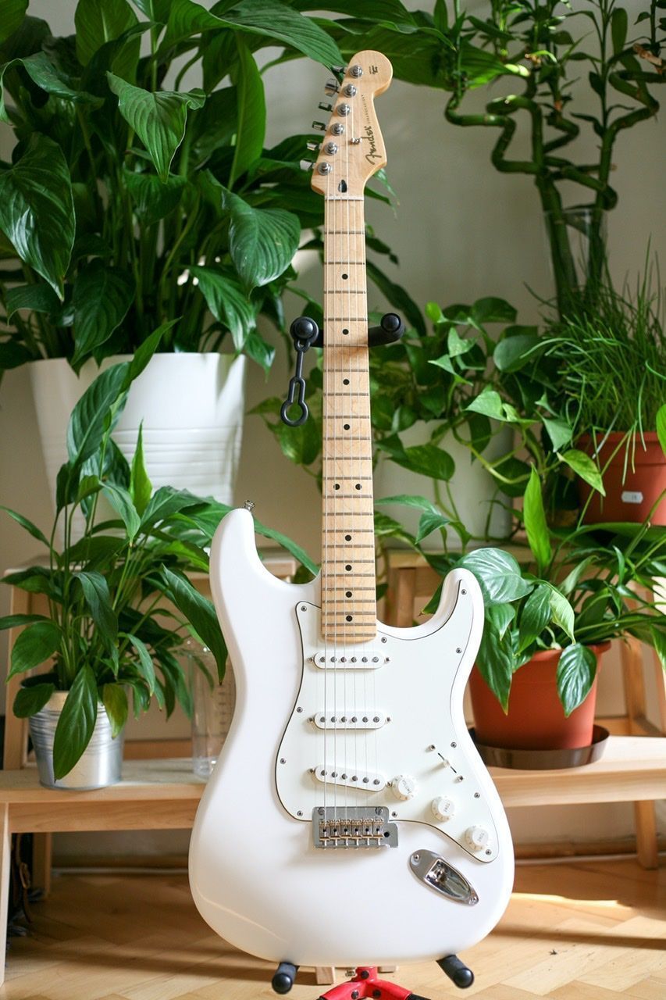
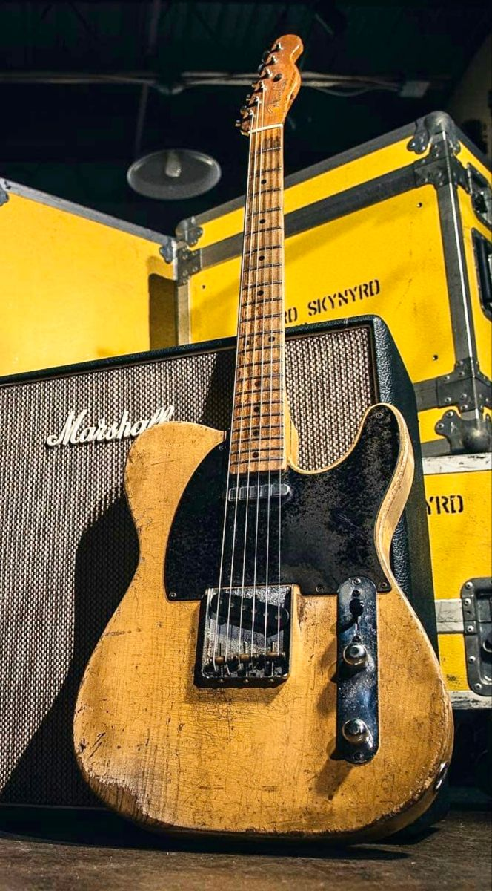
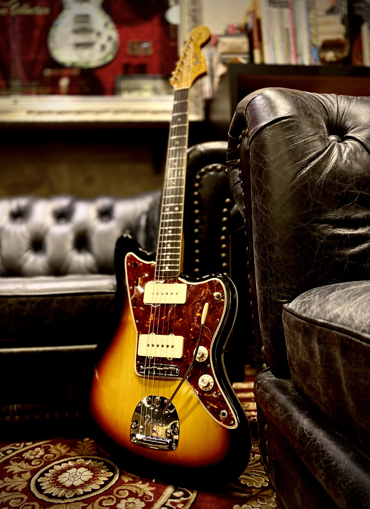
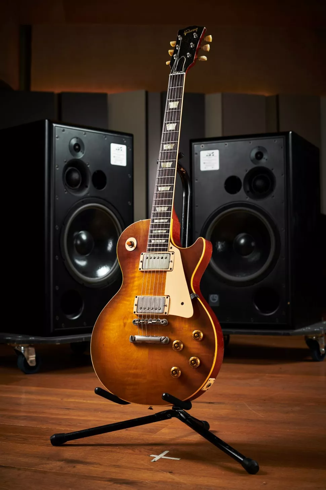
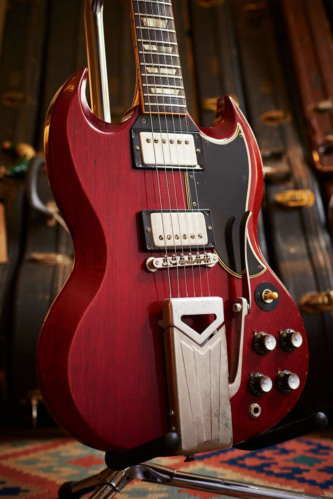
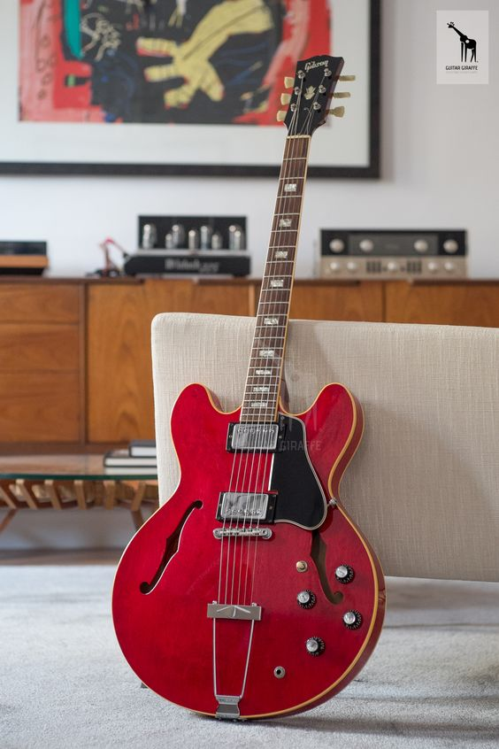
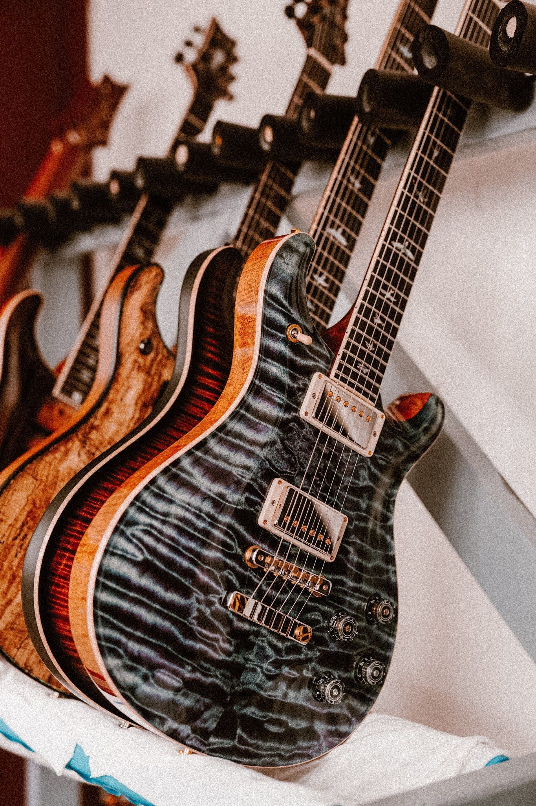
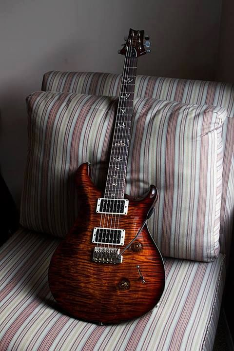

Fender
fue fundada por Leo Fender en la década de 1940, siendo una de las empresas fabricantes de guitarras y bajos eléctricos más conocidas y vendidas en la historia.

Fender Stratocaster
La Fender Stratocaster, popularmente conocida como Strat o Strato, es un modelo de guitarra eléctrica diseñado entre 1952 y 1954. Este modelo por su popularidad es de los más producidos e imitados por otros fabricantes, es utilizado en casi cualquier género por su gran versatilidad y la han utilizado grandes músicos como David Gilmour, Jimi Hendrix, John Mayer y muchos otros.

Fender Telecaster
Llamada "la tabla" en sus comienzos, la Telecaster

Fender Jazzmaster
Fue presentada en el evento NAMM de 1959 y fue diseñada como una versión más cara de la Fender Stratocaster
Gibson
Gibson Brands es una de las empresas más grandes de fabricación de guitarras. Se fundó en 1894 por Orville Gibson en la ciudad de Kalamazoo, Míchigan, Estados Unidos. Su sede se encuentra en Nashville, Tennessee.

Gibson Les Paul
la Gibson Les Paul es considerada, junto con las Fender Telecaster y Fender Stratocaster, la guitarra eléctrica de cuerpo macizo más popular del mundo.

Gibson SG
La Gibson SG es un modelo de guitarra eléctrica sacada al mercado en 1961 (como la Gibson Les Paul SG) por Gibson, y que sigue en producción desde entonces junto a sus muchas variaciones. La SG Standard es el modelo de guitarra más vendido de Gibson.

Gibson ES 335
La Gibson ES 335 es la primera guitarra eléctrica de cuerpo semi-hueco comercializada en el mundo, lanzada por Gibson Guitar Corporation en 1958. La guitarra no es de cuerpo macizo ni totalmente hueco, sino que tiene un bloque de madera en el interior de la caja de resonancia, compartimentando ésta y moderando con ello su vibración. A los lados de la caja se encuentran aberturas acústicas en forma de efe, inspirados en el cuerpo del violín y del chelo.
Paul Reed Smith Guitars
PRS Guitars fue fundada por el guitarrista y luthier Paul Reed Smith en 1985. Paul Reed Smith Guitars es una de las principales empresas constructoras de guitarras eléctricas y acústicas.

PRS SE
El SE Standard 24 recrea fielmente el diseño fundamental del Custom 24, el modelo insignia de PRS, con una construcción de carrocería totalmente caoba.

PRS Custom Shop
La guitarra PRS Custom Shop es una guitarra eléctrica de alta calidad y personalizada que se fabrica en la fábrica de PRS en Maryland, EE. UU